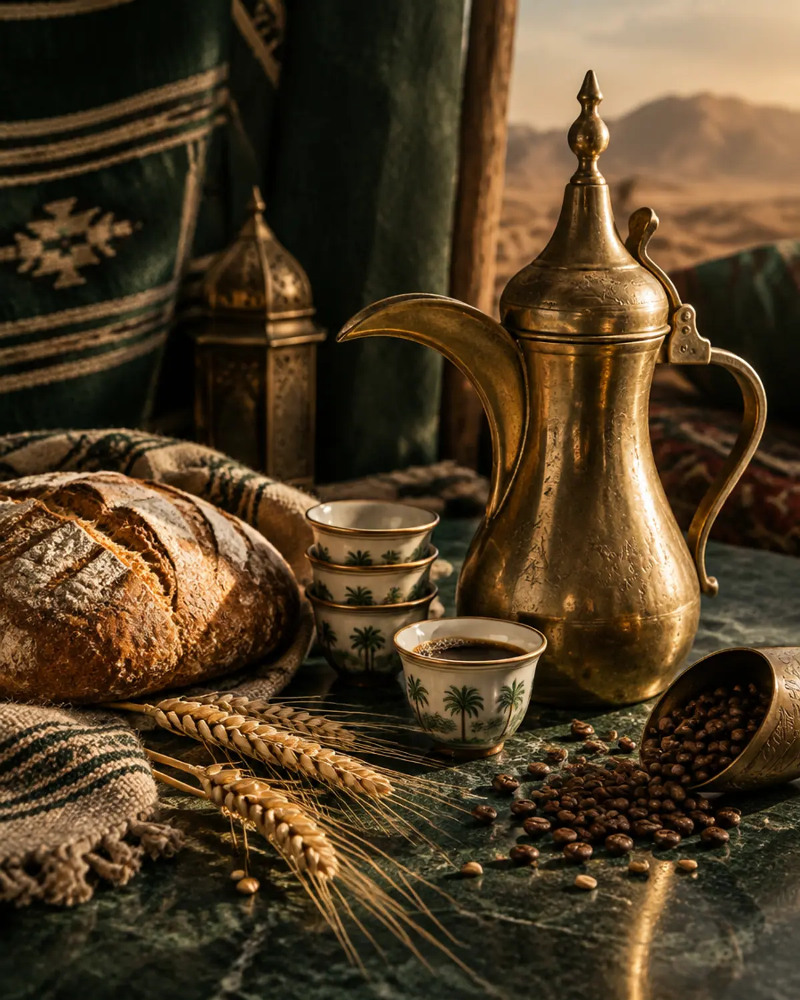
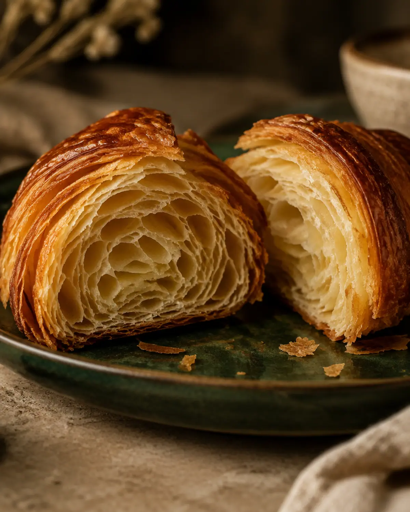

L'atelier
Recettes, gestes et contrôles qualité écrits une fois pour toutes : la maison ne dépend jamais d'une humeur ni d'un jour.
Bienvenue chez

Boulangerie · Café · Culture
Boulangerie · Café · Culture
Le voyage du blé, la naissance du pain.
La maison
Ils n'ont pas bâti des empires. Ils ont bâti des routes.
Ils n'ont pas conquis des peuples. Ils les ont reliés.
Ils s'appelaient les Nabatéens. Leur esprit est devenu le nôtre.
Chez NABATE, nous ne possédons rien : ni le pain, né des millénaires avant nous, ni le café, venu d'Éthiopie par le Yémen. Ce qui nous appartient, c'est le lien entre ces histoires. NABATE est le pont, le passeur, la halte sur la route.
NABATE n'est pas née d'une idée, mais de vingt ans de métier. Ceux d'un chef qui a rassemblé, d'un pays à l'autre, ce qui marche et ce qui ne marche pas, pour en faire un système. Son premier lieu prendra forme en Arabie saoudite.
La caravane n'est jamais à l'arrêt. Elle fait juste une halte.

Deux ambassadeurs

La mémoire de la terre
Le levain nourri chaque jour, la croûte qui craque, la mie encore tiède. Ce moment où l'on rompt le pain se prépare des heures avant votre arrivée.

La route dans la tasse
L'Éthiopie a donné le grain, le Yémen la torréfaction, l'Arabie la qahwa. Offrir un café est le plus ancien geste d'hospitalité de la région, et le plus contemporain.
La boussole
L'histoire du pain et des routes donne de la profondeur à chaque produit. Elle se ressent, elle ne se met pas en scène.
Bâtisseurs de liens, voyageurs, passeurs de grains et de savoir-faire. Leur esprit inspire NABATE, il n'en est pas le musée.
Le temps long du geste artisanal, le temps humain de la rencontre. Nous respectons les deux, sans les opposer.
Le pain est mémoire et ancrage. Le café est voyage et rencontre. Ensemble, ils racontent tout NABATE.
Le chef
Chef entrepreneur et consultant international
Vingt ans de métier. Chef français, il a construit, formé et conseillé, de la France à l'Uruguay, jusqu'à l'Arabie saoudite. Les ouvertures, les équipes formées et les chantiers menés lui ont appris autant que les épreuves traversées en route. De cette expérience est né le système NABATE : une façon de faire écrite, précise et transmissible. Il prend aujourd'hui forme à Riyadh.
Pays d'intervention

Le geste
La fermentation a besoin de temps. Le laminage a besoin de temps. La torréfaction a besoin de temps. Chez NABATE, le temps que nous donnons aux choses se ressent dans ce que vous en recevez.
Dans les coulisses
Quatre étapes écrites et contrôlées : sélection, fermentation, cuisson, finition.
Découvrir02Farine, beurre, chocolat et fruits de référence, tracés lot par lot.
Découvrir03La référence française du four professionnel, pour un geste qui se répète.
Découvrir
Vision
Un artisanat préservé à chaque échelle. Un seul standard, plusieurs façons de le rencontrer.
Recettes, gestes et contrôles qualité écrits une fois pour toutes : la maison ne dépend jamais d'une humeur ni d'un jour.
Boutiques et café-boulangeries où pain, viennoiserie, pâtisserie et café sont servis avec la même hospitalité.
Une colonne vertébrale de production centrale et des partenaires de confiance pour porter le standard plus loin, ville après ville.
NABATE est né de l'expérience d'un chef et prend forme en Arabie saoudite. Les détails se partagent en personne.
Contact
Une question, un partenariat, un projet : écrivez-nous directement.